Put the agent at the
center of your organization.
Greenhouse is an open-source, AI-native agent workbench you self-host in one command. One shared tool layer powers your team's chat, your app's own agent, and any external agent over MCP — add a capability by writing one file.
A member asks about the home-office stipend. The agent searches the team knowledge base, answers with citations, and the trace shows every tool call it made.
The idea
The agent is the product — not a feature bolted on the side.
Most AI tooling stops at personal productivity: great for one developer locally, but the moment it enters an organization the whole layer that matters is missing — unified management, data permissions, audit, collaboration. Greenhouse fills exactly that gap. It's not another clever agent; it's the manageable foundation an agent platform stands on.
If the agent is the center of the organization, then the center of the product should be a tool layer. The tools your team uses in chat are the same tools you expose to Claude or Cursor. Adding a capability is writing one file.
Product tour
One workbench. Every surface shares the agent.
Real screenshots from the bundled example dataset — captured by the same script that runs the project's end-to-end smoke tour, so what you see here is what ships.
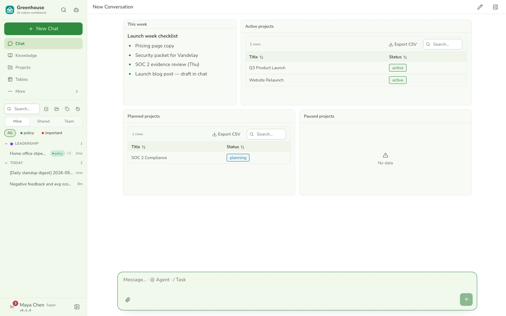
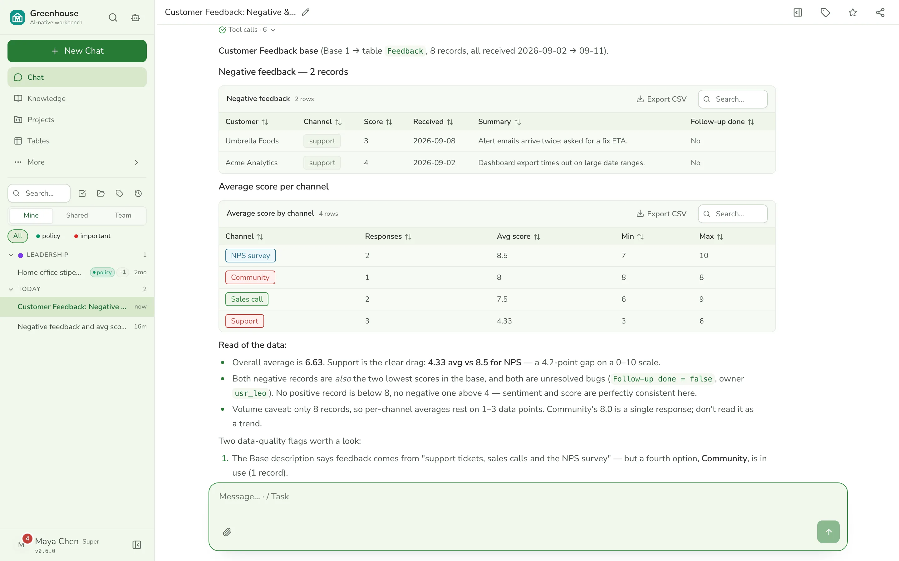
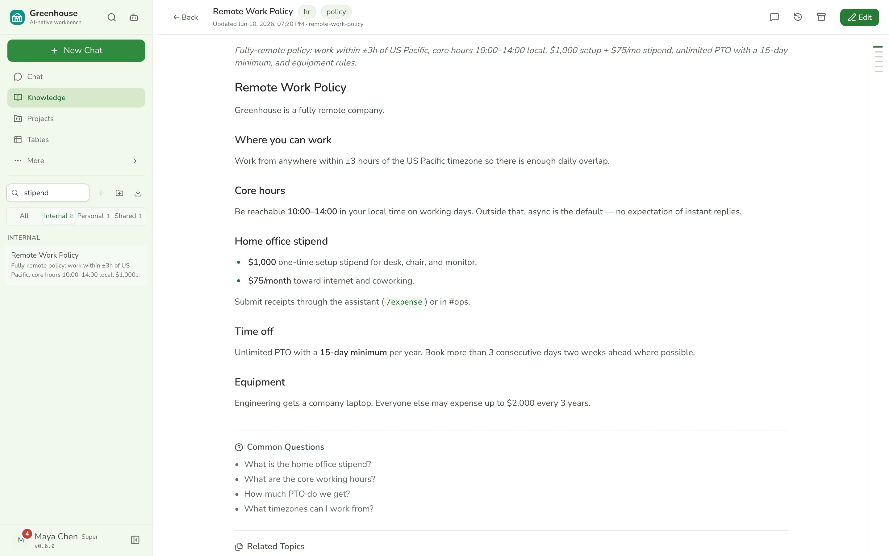
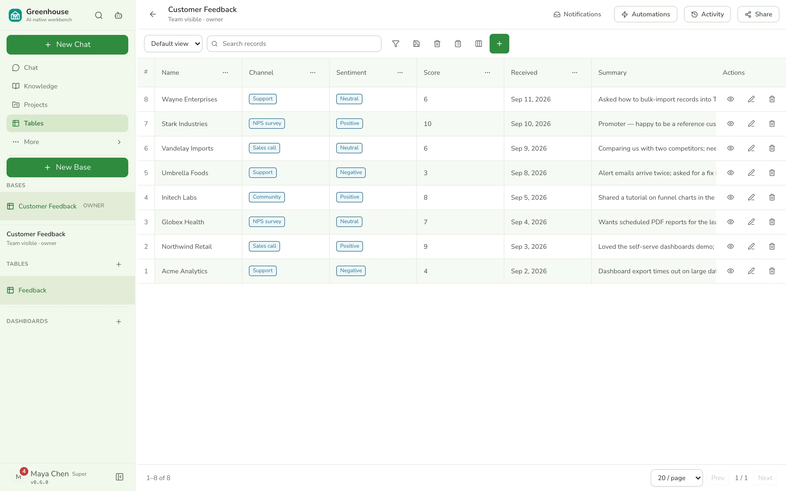
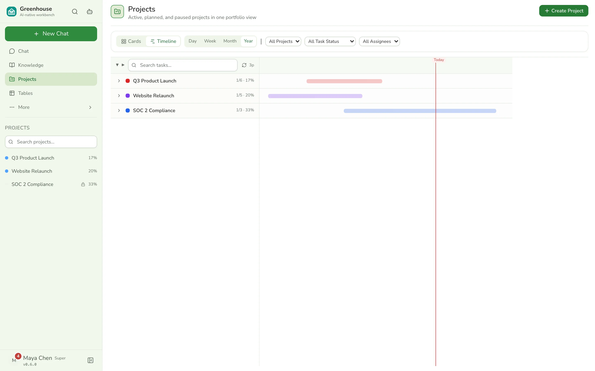
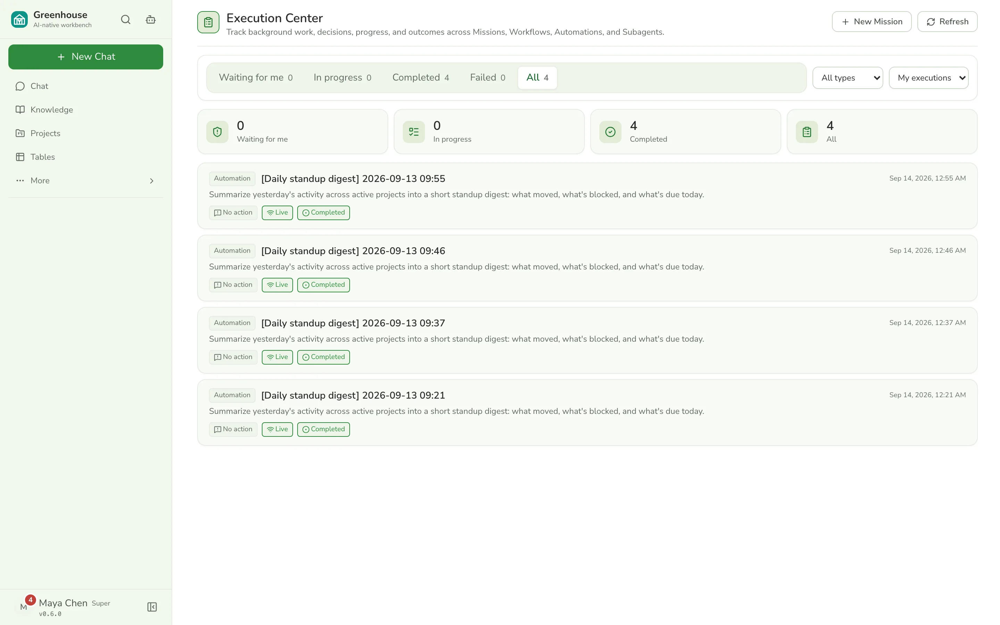
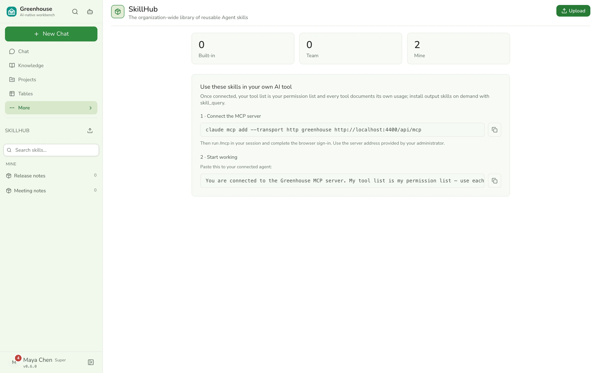
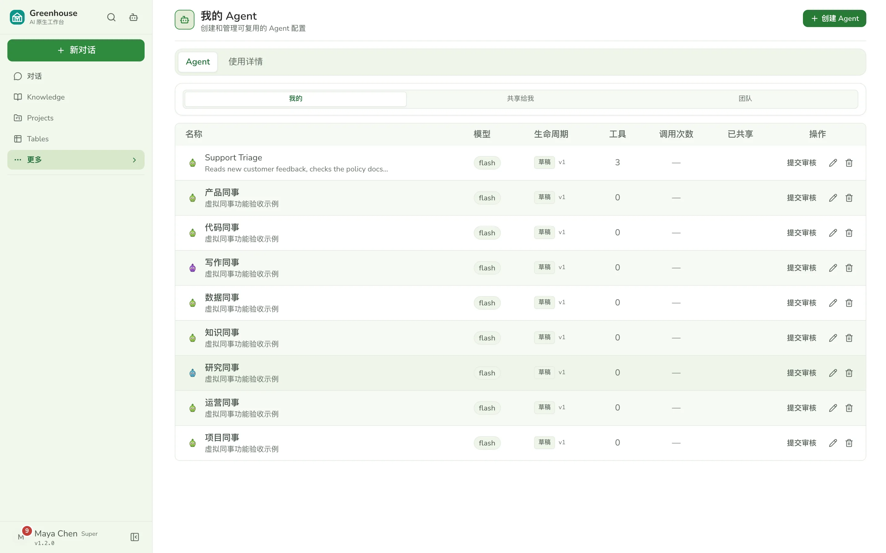
The tool layer
One definition. Three entry points.
Declare a tool once with defineTool and add one line to the registry. It appears everywhere — automatically. No three separate lists drifting apart.
export const myTool = defineTool({ meta: { id: 'my_tool', brief: 'one-line summary', category: 'team', surface: { proxy: 'read', // read | write | none mcp: 'knowledge', // MCP resource group }, }, kind: 'static', create: (ctx) => tool({ /* … */ }), });
one tool = one file
The shared tool layer
Team chat
members, in-app
Agent API
/api/agent
MCP server
Claude · Cursor
Permissions only narrow, never widen — every surface is a subset of the user's own access.
Generative UI
Messages aren't just text.
When an answer carries a table, a chart, or an action to confirm, the chat upgrades it into a real component — sortable tables, charts, file cards, confirm buttons. The agent only ever speaks text; the interface decides how it's rendered.
And those buttons aren't just for show: a click feeds straight back into the step where the agent paused — weaving human approval into the agent's loop.
- Sortable, searchable data tables with CSV export
- Charts — bar, line, pie, radar
- Confirm buttons that resume the agent
- Citations, record peeks, file & preview cards
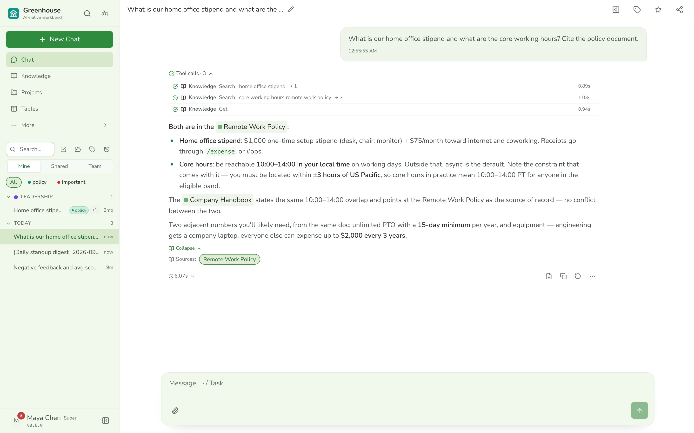
Trust boundary
Safe to point at your whole org.
Permissions live in one place — the platform kernel under the tool layer — and they only ever subtract. That's the boundary that makes it safe to open your organization's capabilities to an outside agent.
Only narrow, never widen
An agent gets a subset of its user's permissions — it can never gain a capability the user doesn't have.
Writes need a human
Mutating actions are deny-by-default. Every write is confirm-gated and logged to an audit trail.
Fail-closed by design
No signing key, no encryption key? The server refuses to start. No "forgot to configure it, now everything's open."
Roles, policies, one dialog
Super and team roles, per-user feature flags, and record / field policies declared once and enforced for HTTP, chat, the proxy and MCP alike.
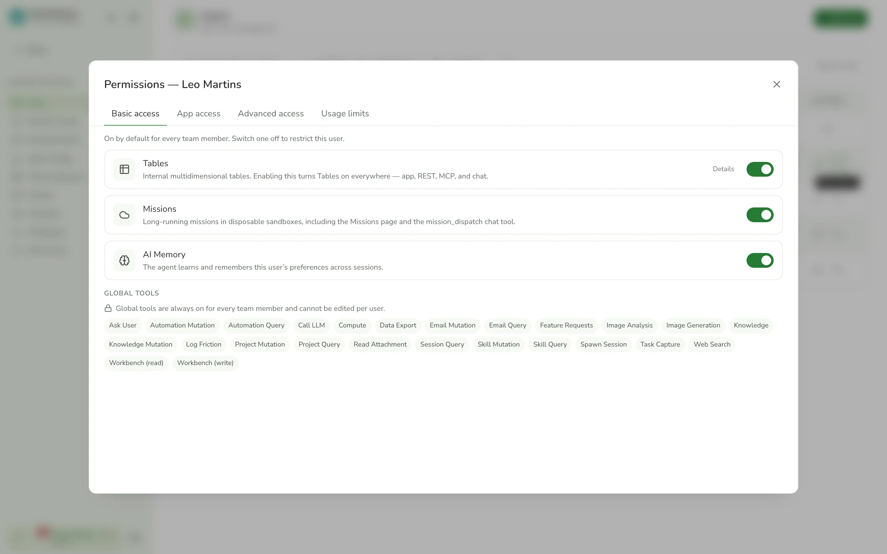
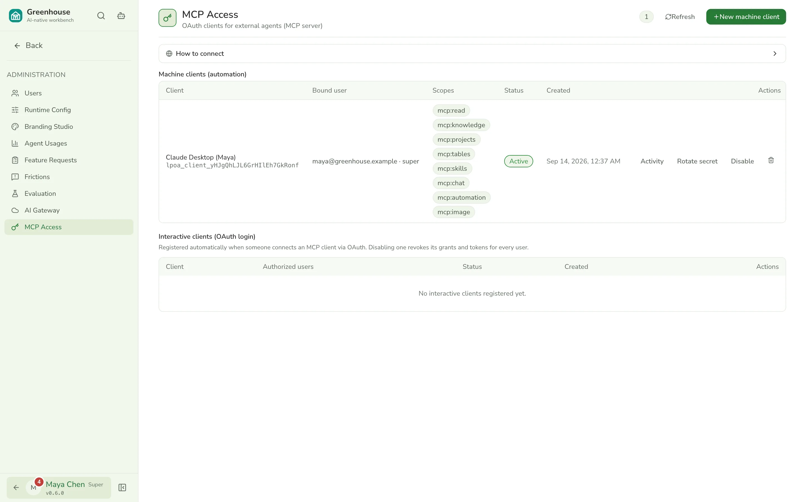
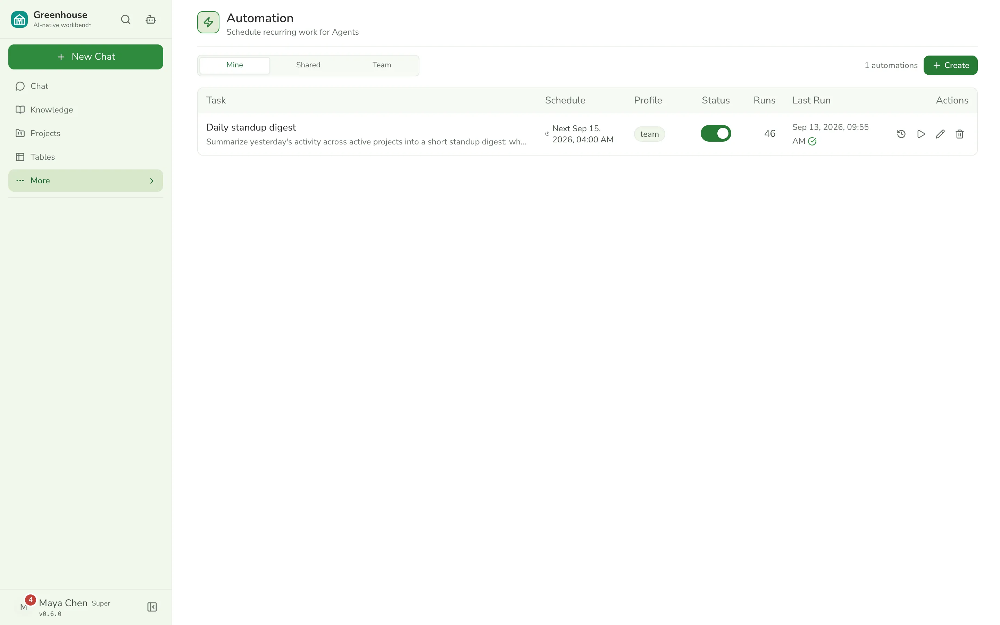
Agent profiles
Distill best practices into virtual coworkers.
A profile is a face, a name, a system prompt, a chosen subset of tools, and a few quick actions — one person's way of doing a job, compressed into a reusable unit. Publish it org-wide after review; anyone can fork it and ship a better version.
Pair it with automations — a cron schedule that runs a profile's prompt on its own — and the daily standup report or morning data sweep runs itself. The longer a team uses it, the stronger its bench of virtual coworkers gets. It compounds.
One platform
Everything shares the same tool layer.
Chat
Streaming agent with tool-call traces, attachments of any file type, per-turn model switching, forking, sharing, tags and a global ⌘P search.
Knowledge base
Team, personal & shared docs. Rich-text editor, Markdown-first, backlinks, comments, version history, group sharing, CJK-aware search.
Projects
Projects & tasks with board, gantt and tree views, members, comments, and an activity log.
Tables
Multidimensional bases: typed fields, views, forms, record links, dashboards, rule automations, and conversational schema planning.
Home workbench
A personal dashboard of live cards backed by the same tools — recipes and templates, editable by drag-and-drop or by asking the agent.
Execution center + automations
Cron-scheduled agent runs, workflows and sub-agents in one surface, with an approval inbox for steps that need a human.
Missions optional
Long-running tasks in disposable sandboxes (Docker + gVisor): a real shell, files and a document toolchain, live progress, artifacts handed back.
Memory
Per-user memories with titles, pinning and lifecycle, plus the friction signals the agent logs when tooling gets in its way.
Skill Center
An org-wide library of agent skills: immutable versioned SKILL.md bundles with changelogs and security scanning; first-party packs ship in the repo.
Email & integrations optional
IMAP/SMTP mailboxes with a server-side draft confirmation, WeCom and Feishu binding, and notifications delivered where people already are.
MCP server + agent proxy
OAuth 2.1 — PKCE for people, client credentials for machines — with scopes per resource group; the same tools over the structured /api/agent proxy.
Platform kernel & runtime config
Applications declare a manifest; roles, capabilities and record / field policies are enforced once for every transport. Credentials and branding are managed from the browser, no restart.
Meta
A product for agents — built by agents.
The implementation is almost entirely agent-written; the top-level design is human-held. Every layer ships an AGENTS.md spelling out its conventions, boundaries, and domain rules — the harness for the agent that builds it. There's even an anti-entropy section: delete-and-cascade discipline, no duplicate implementations, declared capabilities must be real.
A product agents use should be a product agents can keep building. Those turn out to be the same capability.
Self-host
One command. Your infrastructure.
A single container serves the API and the SPA. Postgres, a one-shot migration, done. Members log in with accounts — there's no app to install.
# 1. configure secrets + your LLM endpoint cp .env.example .env && ./scripts/gen-secrets.sh # 2. bring it up — Postgres, migrate, API + SPA docker compose up -d --build # 3. create the first super-admin docker compose exec api pnpm admin:create → app at http://localhost:3000
Then configure it from the browser.
LLM, media and search credentials, the product name, logo and theme tokens all live in Administration — stored encrypted, winning over env vars, applied without a restart, from the login screen on.
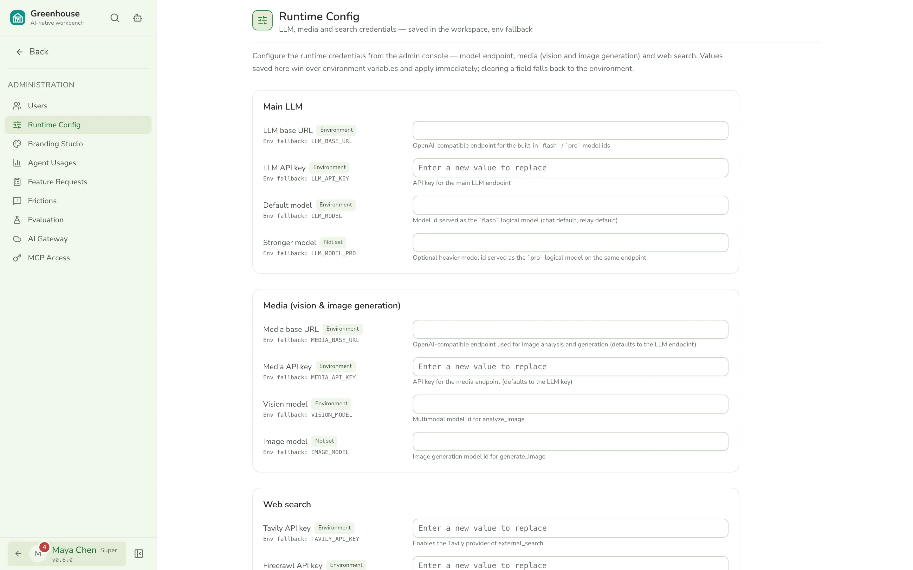
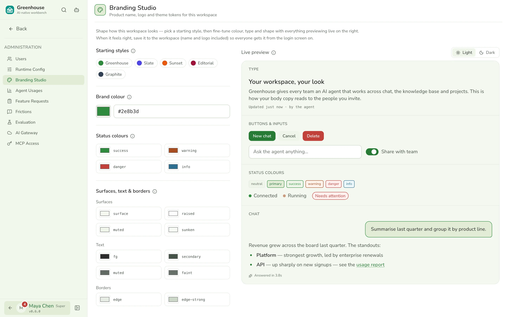
Make it yours
Your own modules, without forking the core.
An extension is two folders and one import line. Every field of its manifest lands in a registry the
platform already has — tools, routes, pages, permissions, search, file storage, MCP consent, scheduled
jobs, CLI commands, its own database migrations. Nothing in the core knows your module exists, so
git merge upstream stays boring.
// apps/api/src/extensions/notes/index.ts export const notesExtension = defineExtension({ id: 'notes', tools: [notesQueryTool], routes: [{ path: '/api/ext/notes', app: notesRoutes }], featureFlags: [{ key: 'notes', defaultEnabled: false }], entityKinds: [{ kind: 'ext:notes:note', route: '#/notes/:id' }], searchSources: [notesSearchLane], driveScopes: [notesCabinet], migrations: { dir: extensionPath(import.meta.url, 'migrations') }, services: createNotesService, })
Switch it on per deployment in greenhouse.config.ts,
then per user with a permission toggle. A disabled extension contributes nothing at all — no tools, no routes,
no migrations.
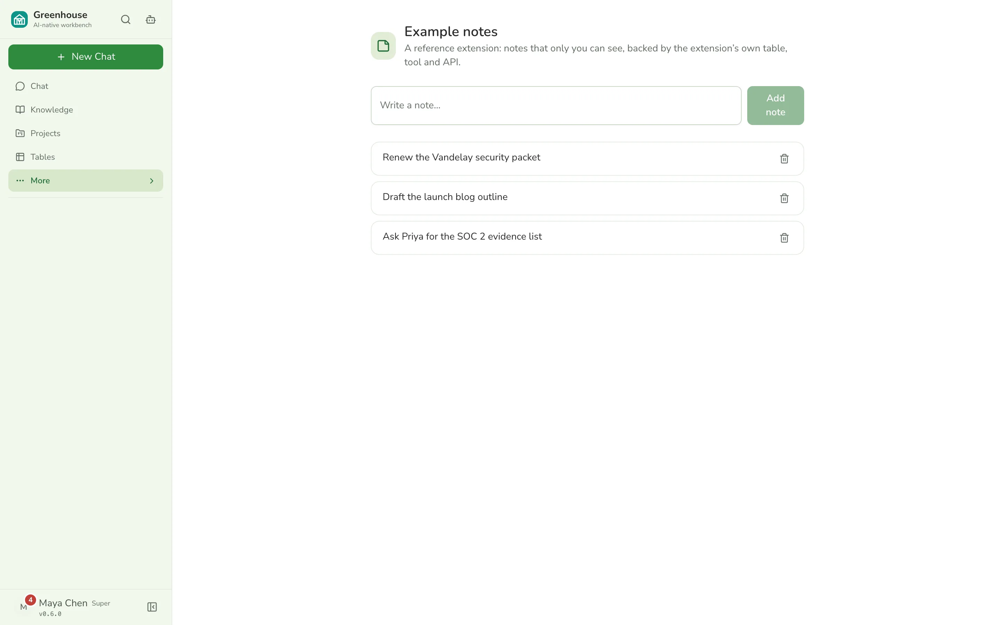
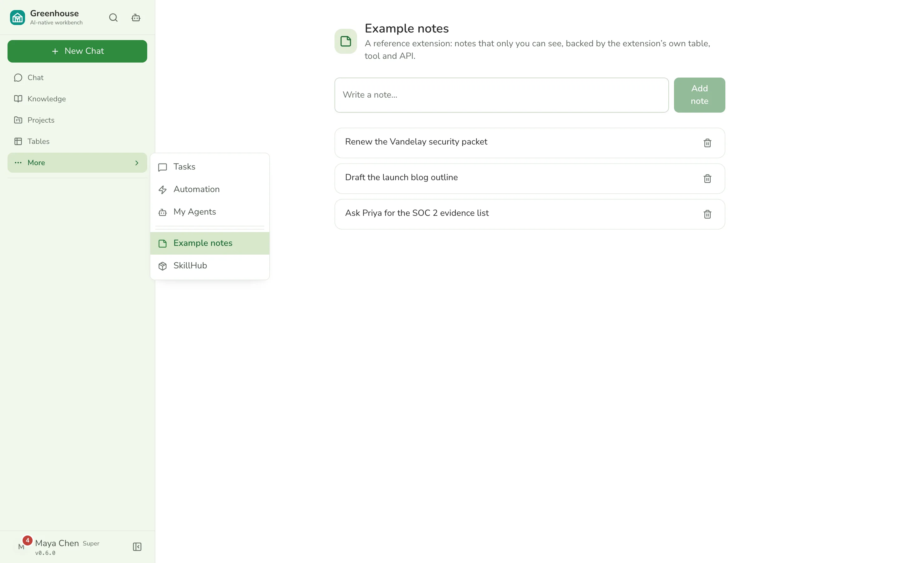
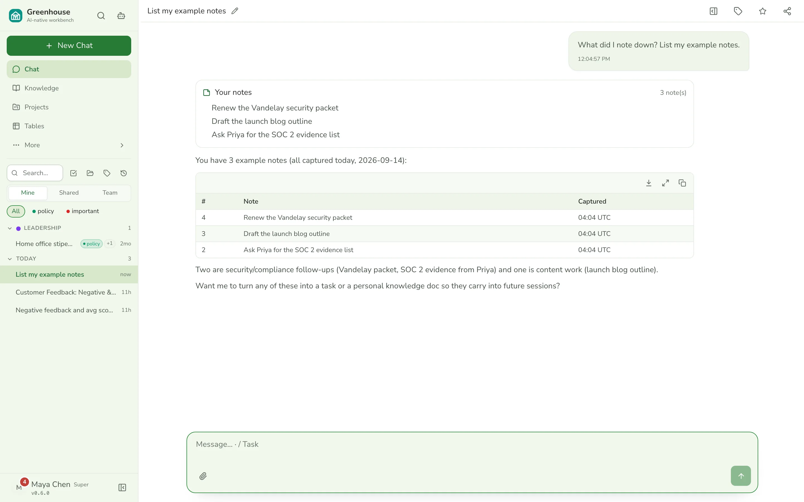
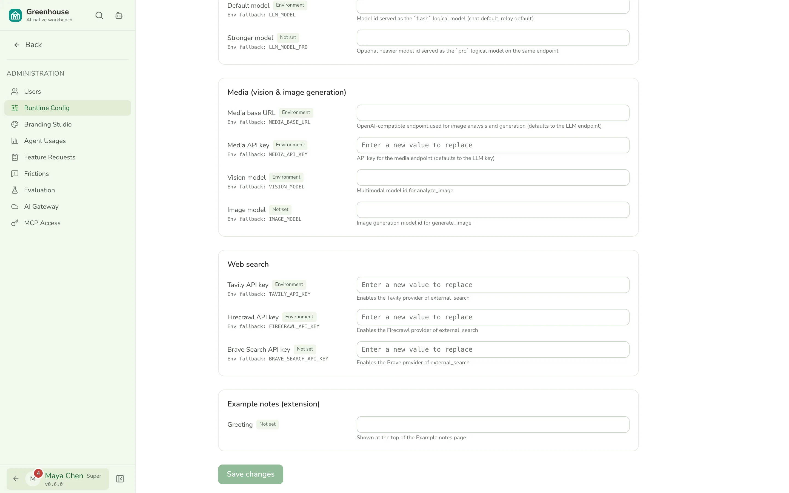
Everywhere your team is
Light, dark, desktop, phone.
Light, dark and system themes on a responsive web app, plus a native Expo app for iOS and Android and a Chrome side-panel extension — all against the same API.
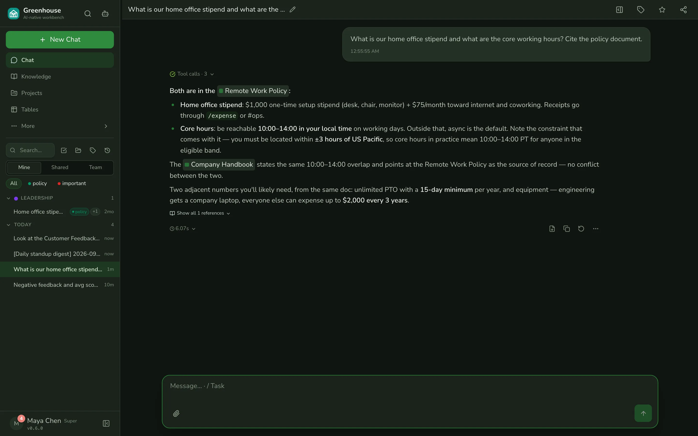
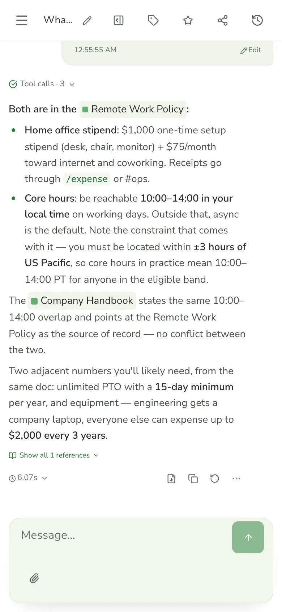
Teams going AI-native
Use it as the foundation for an internal platform — open your tools and data top-down, hand members a day-one agent that solves real work.
Developers & builders
Read it as a reference implementation of how an agent platform fits together — tool layer, permissions, generative UI, MCP — then extend it your way.
Clone it. Write your first tool.
Greenhouse is an answer to what "the agent at the center of an organization" actually looks like — and an invitation.